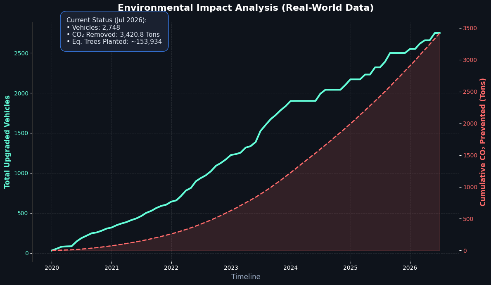

Production TPU seals on a modified FDM printer
I designed intercooler seals for diesel engines, then rebuilt a desktop printer so it could make them in soft TPU at production volume.
- Role
- Founder and lead engineer
- Scope
- Design, production, sales
- Tools
- SolidWorks, Marlin firmware (C++), MKS Eagle 32-bit, TMC2209
The problem
A leak at an intercooler connection lets boost pressure escape, which costs a turbo-diesel power and fuel economy. The seal I designed had to be soft enough to close that gap, so it is printed in TPU of Shore 65A hardness.
Standard FDM printers cannot feed filament that soft at production speed: it buckles between the drive gear and the nozzle and jams the extruder.
The engineering solution
Instead of buying industrial printers, I rebuilt a desktop machine for flexible filament:
- Hardware. Retrofitted an Anet A8 Plus frame with a direct-drive extruder path designed for flexible filament. Replaced the mainboard with an MKS Eagle (32-bit) and TMC2209 drivers for precise micro-stepping and quieter operation.
- Firmware. Modified the Marlin source: tuned thermal runaway protection, recalibrated stepper current (Vref) to balance torque against heat, and tuned linear advance for elastomer flow.
The rebuilt printer then ran production around the clock with a near-zero failure rate.
Results
Figures as of November 2026.

Restoring an airtight intake path brings the engine back to its designed boost pressure, which supports the fuel economy it was built for.